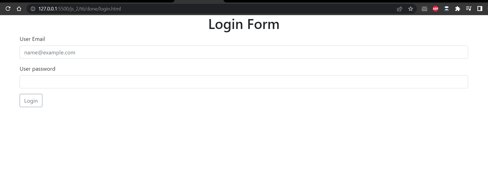

Практикування редагування документів у базі данних. (Приклад додавання коментарів до статті)
Завдання розраховане на 2 заняття. У результаті потрібно створити 3 сторінки login.html, index.html, article.html. Користувач повинен:
- Aвторизуватись на сайті (login.html)
- Побачити список усіх статтей який міститеме посилання на сторінки із статтями (index.html)
- По кліку переходити на нову стоірку із статтею (article.html)
1. Додайте логінізацію на вашу сторінку (login.html).
- Створіть фукцію яка прийматиме логін та пароль користувача login(email, password){..}
- У цій функції спробуйте знайти користувача у базі данних за вказаним логіном (email)
- Якщо такий користувач існує перевірте чи збігається його пароль.
- Якщо пароль вірний то зберігайте користувача у localStorage та відправляйте його на сторінку index.html
- Створіть функцію яка перевірятиме чи є у localStorage збережений користувач checkUser(){...}.
- Якщо користувач збережений у localStorage то відправляйте користувача із стоірнки login.html на сторінку зі писком статтей (index.html).

2. Додайте спиок статтей які є у вашій базі данних у колекції articles. Список відображатиме лише назву статті та її id. По кліку на назву статті витягуйте з бази додаткову інформацію про статтю (текст статті, кількість переглядів та кількість коментарів).

3. Після завантаження статті оновлюйте її кількість переглядів.
4. Додайте можливість поставити лайк статті.

5. Додайте нову колекцію comments у Firestore Database. Кожен коментар матиме такі поля: author, text, likes

6. Додайте можливість прокоментувати статтю.

<div id="new_comment">
<div class="mb-3">
<p>Leave a comment as: UserName</p>
</div>
<div class="mb-3">
<label class="form-label">Your comment</label>
<textarea class="form-control" id="comment" rows="3"></textarea>
</div>
<div class="d-flex justify-content-end">
<button class="btn btn-primary">Save</button>
</div>
</div>
<div id="old_comments">
</div>
hellp